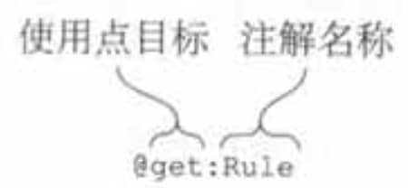
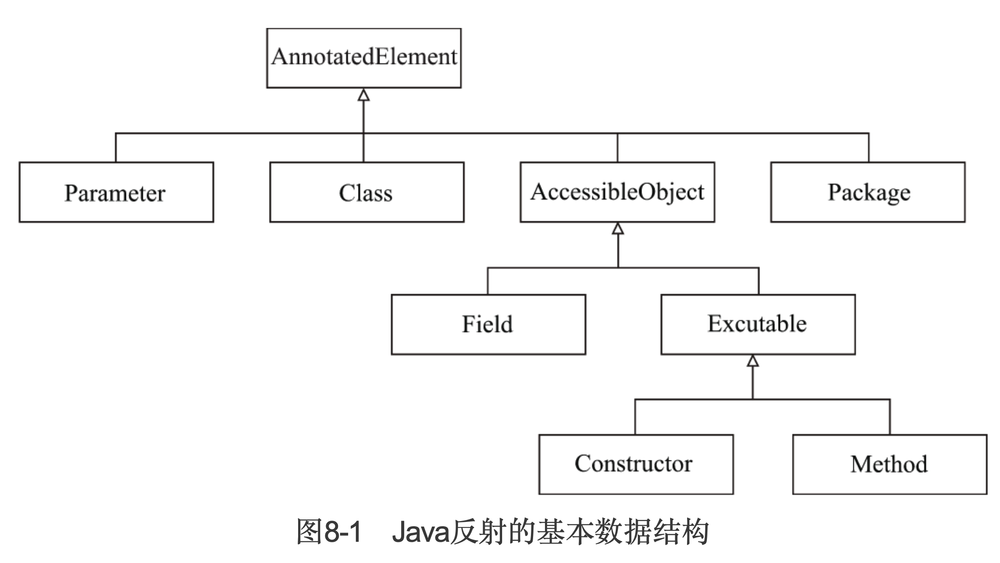
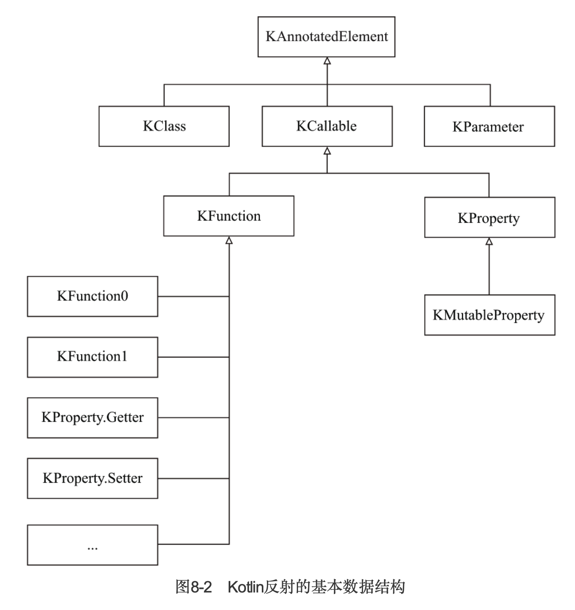
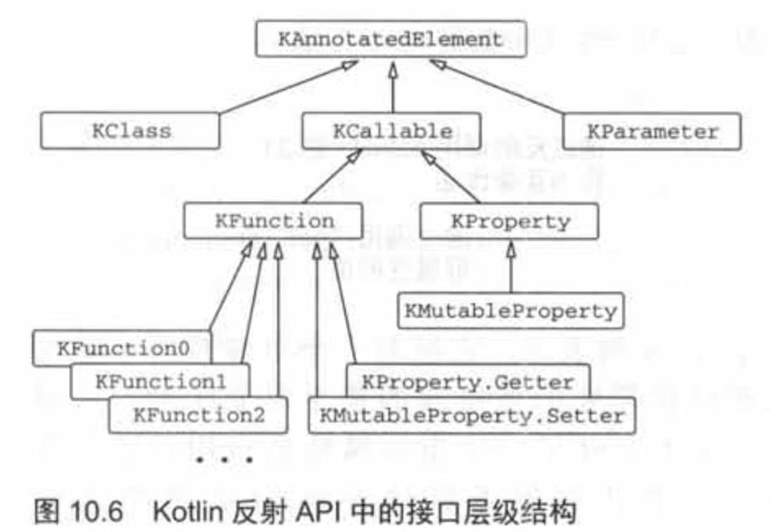

1. 注解
1.1. 应用注解
使用方式和Java一样。
注解只能拥有如下类型的参数：基本数据类型、字符串、枚举、类引用、其他的注解类，以及前面这些类型的数组。
指定注解实参的语法与Java有些微小的差别：
- 要把一个类指定为注解实参，在类名后加上::class：@MyAnnotation(MyClass::class)。
- 要把另一个注解指定为一个实参，去掉注解名称前面的@。
- 要把一个数组指定为一个实参，使用arrayOf函数；
@RequestMapping(path = arrayOf("/foo", "/bar"))。 如果注解类是在Java中声明的，命名为value的形参按需自动地被转换成可变长度的形参，所以不用arrayOf函数就可以提供多个实参。
注解实参需要在编译期就是已知的，所以不能引用任意的属性作为实参。要把属性当作注解实参使用，需要用const修饰符标记它，来告知编译器这个属性是编译期常量。
1.2. 注解目标
Kotin源代码中的一些单个声明会对应成多个Java声明，而且它们每个都能携带注解。例如，一个 Kotlin属性就对应了一个Java字段、一个getter，以及一个潜在的setter和它的参数。所以需要说明这些元素中哪些需要注解。
使用点目标声明被用来说明要注解的元素。使用点目标被放在@符号和注解名称之间，并用冒号和注解名称隔开。图中的单词get导致注解@Rule被应用到了属性的getter上。

Kotlin支持的使用点目标的整列表如下：
property：Java的注解不能应用这种使用点目标。
field：为属性生成的字段。
- get：属性的getter.
- set：属性的setter。
- receiver：扩展函数或者扩展属性的接收者参数。
- param：构造方法的参数。
- setparam：属性setter的参数。
- delegate：为委托属性存储委托实例的字段。
- file：包含在文件中声明的顶层函数和属性的类。
注意，和Java不一样的是，Kotin 允许对任意的表达式应用注解，而不仅仅是类和函数的声明及类型。
1.2.1. 用注解控制Java API
Kotlin提供了各种注解来控制Kotlin编写的声明如何编译成字节码并暴露给Java调用者。其中一些注解代替了Java语言中对应的关键字：比如，注解@Volatile和@Strictfp直接充当了Java的关键字volatile和strictfp的替身。
其他的注解则是被用来改变Kotlin 声明对Java调用者的可见性：
@JvmName将改变由Kotlin 生成的Java方法或字段的名称。
@JvmStatic能被用在对象声明或者伴生对象的方法上，把它们暴露成Java的静态方法。
@JvmOverloads,曾在3.2.2节中出现过，指导Kotlin编译器为带默认参数值的函数生成多个重载(函数)。
@JvmField可以应用于一个属性，把这个属性暴露成一个没有访问器的公有Java字段。
1.3. 声明注解
Kotlin的注解声明和Java的不一样：
annotation class JsonExclude(val name : String)//如果有参数的话
2. 反射
2.1. Kotlin和Java反射
Java

Kotlin

1) Kotlin的KClass和Java的Class可以看作同一个含义的类型，并且可以通过.java和.kotlin方法在KClass和Class之间互相转化。 2) Kotlin的KCallable和Java的AccessiableObject都可以理解为可调用元素。Java中构造方法为一个独立的类型，而Kotlin则统一作为KFunction处理。 3) Kotlin的KProperty和Java的Field不太相同。Kotlin的KProperty通常指相应的Getter和Setter(只有可变属性Setter)整体作为一个KProperty(通常情况Kotlin并不存在字段的概念)，而Java的Field通常仅仅指字段本身。
2.2. 介绍
Kotlin的反射有2种API，一种是Java的API，定义在包java.lang.reflect中，所以使用了反射API的Java库完全兼容Kotlin代码。另一种是Kotlin的API，定义在kotlin.reflect。
Koltin的反射库单独打成了包，这是为了减小Android包的大小，如果要使用，需要引入依赖：org.jetbrains.kotlin:kotlin-reflect。
Java反射的入口是Class对象，而Kotlin反射的入口是KClass对象。
fun getClass() {
val person = Person("Alice", 29)
//获取KClass对象
val kClass1: KClass<Person> = Person::class
val kClass2: KClass<Person> = person.javaClass.kotlin
//获取JavaClass对象
val class1: Class<Person> = Person::class.java
val class2: Class<Person> = person.javaClass
}
2.3. 反射调用方法
2种方式
- 获取没有类型参数的KFunction对象，然后调用call方法并传入相应的参数
fun foo(x: Int) = println(x)
fun main(args: Array<String>) {
val kFunction = ::foo
kFunction.call(42)
}
但这种方式如果传的参数个数有错误就会导致运行时异常。
- 获取带类型参数的KFunction对象，然后调用invoke方法。
fun sum(x: Int,y: Int) = x + y
fun test() {
val kFunction: KFunction2<Int,Int,Int> = ::sum
println(kFunction.invoke(1, 2))//可以调用invoke方法
println(kFunction(3, 4))//可以省略invoke方法
}
KFunctionN接口是如何定义的，又是在哪里定义的？
像KFunction1这样的类型代表了不同数量参数的函数。每一个类型都继承了KFunction并加上一个额外的成员invoke，它拥有数量刚好的参数。例如，KFunction2声明了operator fun invoke(p1: P1， p2: P2): R，其中P1和P2代表着函数的参数类型，而R代表着函数的返回类型。
这些类型称为合成的编译器生成类型，你不会在包kotlin.reflect中找到它们的声明。这意味着你可以使用任意数量参数的函数接口。合成类型的方式减小了kotlin-reflect.jar的尺寸，同时避免了对函数类型参数数量的人为限制。
2.4. 反射的方法包含默认参数的情况
fun test2() {
val fun1: KFunction1<Int,Int> = ::fun1
println(fun1.call())
}
fun fun1(x: Int = 1): Int = x
调用test2方法会报错Callable expects 1 arguments, but 0 were provided.
应该用callBy方法，callBy需要一个Map<KParameter, Any?>参数，表示传入此方法的参数。
fun test2() {
val fun1: KFunction2<Int,Int,Int> = ::fun1
val paramList = fun1.parameters
val paramsMap = hashMapOf<KParameter,Any?>()
paramsMap[paramList[0]] = 2
println(fun1.callBy(paramsMap))
}
fun fun1(x: Int = 1,y: Int = 3): Int = x + y
2.5. 反射获取属性
var value: Int = 1
class Person(val name: String, var age: Int)
fun main(args: Array<String>) {
//顶层属性表示为KProperty0的实例，有一个无参的get方法
val kProperty = ::value
var temp = kProperty.call()//call方法会调用其getter方法
println(temp)
kProperty.set(23)
temp = kProperty.get()
println(temp)
//成员属性由KProperty1的实例表示，它拥有一个单参数的get方法，参数为所属的那个对象实例。
val person = Person("aa", 12)
val kPropertyAge = Person::age//具体类型为KProperty<Person, Int>，第一个表示接收者类型，第二个表示属性类
println(kPropertyAge.get(person))
kPropertyAge.set(person, 22)
println(kPropertyAge.get(person))
}
不能访问函数的局部变量。
KProperty可以表示任何属性，而它的子类KMutableProperty表示一个用var声明的可变属性。
